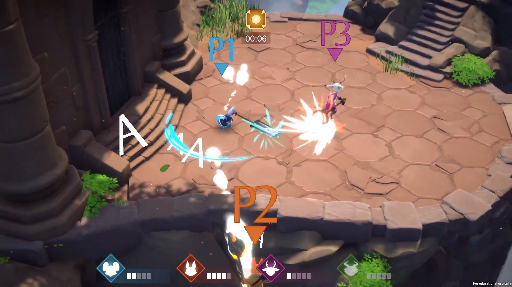
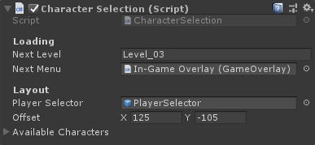
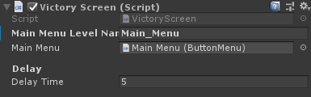
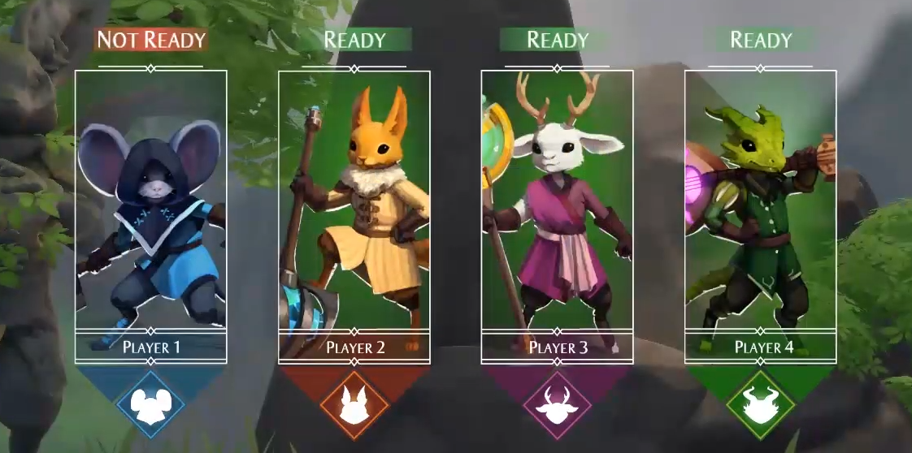

Project Overview
Fennec Peak is a 2-4 player, local multiplayer game. It was created in a seven week project in a team of twelve. In the game, players fight each other to be the last one standing by knocking each other off of the steep edges that surround the level. To reach that goal, they must make use of their snappy movement, attacks and objects in the environment.
My Role
The most notable points I was responsible for as a programmer were:
The Player Component Structure
The UI system
The Camera system
Together with other miscellaneous tasks such as implementing the new input system for Unity and bug-fixing.
The Player Component Structure
From the planning stages during the project, it has become apparent that the player game object will have many funcionalities connected to it.

With the above structure, everyone could work on each of the components without having to work in the same file. The structure allowed for easier access to reach variables needed by outside scripts like the HUD elements. It also opened up a possibility to change the playable character without a need for a new GameObject.
UI System
The UI system has been written with the goal of allowing other team members to quickly set up fully working UI elements. It consists of multiple scripts which take care of displaying and hiding selected UI pages, and providing basic menu Functionality like pressing a "back" button to return to a previously opened menu page.
 Creating a script which inherits from the Menu class automatically allows the object to act as a new menu page. This makes it possible to create a page with custom functionality such as a Character Selection menu.
public class MenuManager : MonoBehaviour
{
[SerializeField] Menu startMenu;
[SerializeField] bool startPaused;
[HideInInspector] public Menu currentMenu;
Menu[] menus;
static List<Menu> menuHierarchy = new List<Menu>();
public static MenuManager instance;
static bool pausedState;
public static bool isPaused
{
get => pausedState;
set
{
pausedState = value;
if (value)
Time.timeScale = 0;
else
Time.timeScale = 1;
}
}
private void Awake()
{
DontDestroyOnLoad(gameObject);
if (!instance)
{
instance = this;
}
else
{
Debug.LogError("There can only be one MenuManager! Removing " + gameObject.name);
Destroy(gameObject);
return;
}
isPaused = startPaused;
menus = GetComponentsInChildren<Menu>();
for (int i = 0; i < menus.Length; i++)
{
menus[i].gameObject.SetActive(false);
}
EnterMenu(startMenu);
}
public void EnterMenu(Menu menuObject)
{
menuHierarchy.Add(menuObject);
SetMenu(menuObject);
}
public void ReturnMenu()
{
if (menuHierarchy.Count > 1)
{
SetMenu(menuHierarchy[menuHierarchy.Count - 2]);
menuHierarchy.RemoveAt(menuHierarchy.Count - 1);
}
}
void SetMenu(Menu menuObject)
{
if (currentMenu)
currentMenu.gameObject.SetActive(false);
currentMenu = menuObject;
currentMenu.gameObject.SetActive(true);
}
public void ResetHierarchy()
{
menuHierarchy.Clear();
}
}public class CharacterSelection : Menu
{
[Header("Loading")]
[SerializeField] string nextLevel;
[SerializeField] Menu nextMenu;
[Header("Layout")]
[SerializeField] GameObject playerSelector;
List<MenuNavigation> registeredPlayers = new List<MenuNavigation>();
[SerializeField] Vector2 offset;
[SerializeField] List<GameObject> availableCharacters = new List<GameObject>();
public int PlayerCount => registeredPlayers.Count;
private void OnEnable()
{
if (menuManager && menuManager.currentMenu is CharacterSelection)
{
for (int i = 0; i < MenuPlayerHandler.playerList.Count; i++)
{
Destroy(MenuPlayerHandler.playerList[i].GetComponent<MenuNavigation>().playerCharacterStruct);
}
}
}
void Update()
{
//Add unregistered players to list
for (int i = 0; i < MenuPlayerHandler.playerList.Count; i++)
{
MenuNavigation playerInput = MenuPlayerHandler.playerList[i].GetComponent<MenuNavigation>();
if (playerInput.hasJoined)
{
if (!registeredPlayers.Contains(playerInput))
{
registeredPlayers.Add(playerInput);
playerInput.playerPrefab = availableCharacters[registeredPlayers.Count - 1];
}
}
else
{
if (registeredPlayers.Contains(playerInput))
{
registeredPlayers.Remove(playerInput);
}
}
}
//Check game ready status
int readyPlayers = 0;
for (int i = 0; i < registeredPlayers.Count; i++)
{
readyPlayers += (registeredPlayers[i].isReady) ? 1 : 0;
}
if (readyPlayers >= 2 && readyPlayers == registeredPlayers.Count)
{
PlayerHandler.playerList.Clear();
for (int i = 0; i < registeredPlayers.Count; i++)
{
PlayerHandler.playerList.Add(registeredPlayers[i].gameObject);
gameObject.name = "Player " + (PlayerHandler.playerList.Count);
}
SceneManager.LoadScene(nextLevel);
menuManager.EnterMenu(nextMenu);
for (int i = 0; i < registeredPlayers.Count; i++)
{
registeredPlayers[i].Spawn();
}
MenuManager.isPaused = false;
}
}
}
Camera System
The goal of the camera was to show all the players at once while maintaining a distance which provides a good view of the surrounding area.
public class AutoCamera : MonoBehaviour
{
[SerializeField] GameObject[] targetsToFollow;
[SerializeField] float distanceMultiplier = 2;
[SerializeField] public float shortestDistance = 10;
[SerializeField, Range(1, 10)] public float camSpeed = 1;
float currentDistance;
void Update()
{
if (targetsToFollow.Length > 0)
{
//Find the current longest distance between the players the furtherest away
Vector3 finalPosition = Vector3.zero;
float longestDistance = 0;
if (targetsToFollow.Length > 1)
{
for (int i = 0; i < targetsToFollow.Length; i++)
{
for (int j = 0; j < targetsToFollow.Length; j++)
{
if (i != j)
{
float distance = Vector3.Distance(targetsToFollow[i].transform.position, targetsToFollow[j].transform.position);
if (distance > longestDistance)
{
longestDistance = distance;
//Set center position
finalPosition = (targetsToFollow[i].transform.position + targetsToFollow[j].transform.position) / 2;
}
}
}
}
}
else
{
finalPosition = targetsToFollow[0].transform.position;
}
currentDistance = Mathf.Max(longestDistance * distanceMultiplier, shortestDistance);
finalPosition += transform.forward * -currentDistance;
transform.position = Vector3.Lerp(transform.position, finalPosition, (float)((camSpeed * Time.timeScale) / 100));
}
}
}